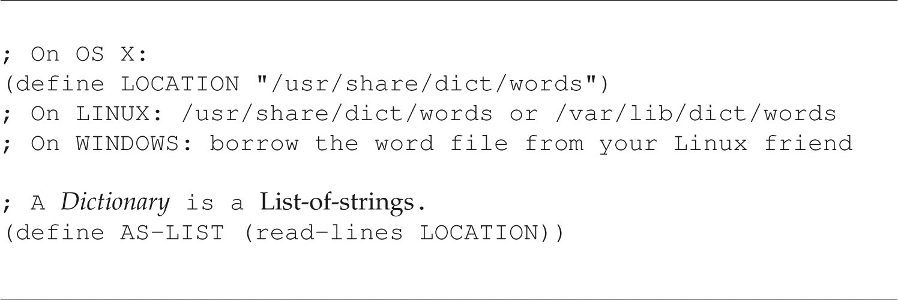

12.1 Real-World Data: Dictionaries
Information in the real world tends to come in large quantities, which is why it makes so much sense to use programs for processing it. For example, a dictionary does not just contain a dozen words, but hundreds of thousands. When you want to process such large pieces of information, you must carefully design the program using small examples. Once you have convinced yourself that the programs work properly, you run them on the real-world data to get real results. If the program is too slow to process this large quantity of data, reflect on each function and how it works. Question whether you can eliminate any redundant computations.
For performance concerns, see part V. From here to there, the focus is on designing programs systematically so that you can then explore performance problems properly.
Figure 74 displays the one line of code needed to read in an entire dictionary of the English language. To get an idea of how large such dictionaries are, adapt the code from the figure for your particular computer and use length to determine how many words are in your dictionary. There are 235,886 words in ours today, July 25, 2017.

Figure 74: Reading a dictionary
In the following exercises, letters play an important role. You may wish to add the following to the top of your program in addition to your adaptation of figure 74:
; A Letter is one of the following 1Strings:
; -- "a"
; -- …
; -- "z"
; or, equivalently, a member? of this list:
(define LETTERS
(explode "abcdefghijklmnopqrstuvwxyz"))
Hint Use list to formulate examples and tests for the exercises.
Exercise 195. Design the function starts-with#, which consumes a Letter and Dictionary and then counts how many words in the given Dictionary start with the given Letter. Once you know that your function works, determine how many words start with "e" in your computer’s dictionary and how many with "z". 
Exercise 196. Design count-by-letter. The function consumes a Dictionary and counts how often each letter is used as the first one of a word in the given dictionary. Its result is a list of Letter-Counts, a piece of data that combines letters and counts.
Once your function is designed, determine how many words appear for all letters in your computer’s dictionary.
Note on Design Choices An alternative is to design an auxiliary function that consumes a list of letters and a dictionary and produces a list of Letter-Counts that report how often the given letters occur as first ones in the dictionary. You may of course reuse your solution of exercise 195. Hint If you design this variant, notice that the function consumes two lists, requiring a design problem that is covered in chapter 23 in detail. Think of Dictionary as an atomic piece of data that is along for the ride and is handed over to starts-with# as needed.
Exercise 197. Design most-frequent. The function consumes a Dictionary. It produces the Letter-Count for the letter that occurs most often as the first one in the given Dictionary.
What is the most frequently used letter in your computer’s dictionary and how often is it used?
Note on Design Choices This exercise calls for the composition of the solution to the preceding exercise with a function that picks the correct pairing from a list of Letter-Counts. There are two ways to design this latter function:
• Design a function that picks the pair with the maximum count.
• Design a function that selects the first from a sorted list of pairs.
Consider designing both. Which one do you prefer? Why?
Exercise 198. Design words-by-first-letter. The function consumes a Dictionary and produces a list of Dictionarys, one per Letter.
Redesign most-frequent from exercise 197 using this new function. Call the new function most-frequent.v2. Once you have completed the design, ensure that the two functions compute the same result on your computer’s dictionary:
(check-expect
(most-frequent AS-LIST)
(most-frequent.v2 AS-LIST))
Note on Design Choices For words-by-first-letter you have a choice for dealing with the situation when the given dictionary does not contain any words for some letter:
• One alternative is to exclude the resulting empty dictionaries from the overall result. Doing so simplifies both the testing of the function and the design of most-frequent.v2, but it also requires the design of an auxiliary function.
• The other one is to include '() as the result of looking for words of a certain letter, even if there aren’t any. This alternative avoids the auxiliary function needed for the first alternative but adds complexity to the design of most-frequent.v2. End
Note on Intermediate Data and Deforestation This second version of the word-counting function computes the desired result via the creation of a large intermediate data structure that serves no real purpose other than that its parts are counted. On occasion, the programming language eliminates them automatically by fusing the two functions into one, a transformation on programs that is also called deforestation. When you know that the language does not deforest programs, consider eliminating such data structures if the program does not process data fast enough.